The Sistine Madonna is a painting by the Italian High Renaissance artist Raphael, circa 1512-1514. It is housed in the Gemäldegalerie Alte Meister (old masters) of Dresden, Germany. It was carried to Moscow after the Second World War, and was later returned to Dresden. Soviet Union engaged in systematic looting during World War II, particularly of Germany - seeing this as a reparations for damage and looting done by Germany in the Soviet Union.
|
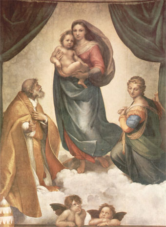 |
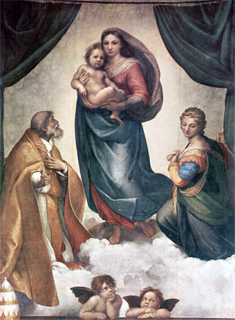 |
The canvas with the Virgin, Child and Saints Sixtus and Barbara, usually called the Sistine Madonna, is characterized by an imaginary space created by the figures themselves. The figures stand on a bed of clouds, framed by heavy curtains which open to either side. The Virgin actually appears to descend from a heavenly space, through the picture plane, out into the real space in which the painting is hung. The gesture of St. Sixtus and the glance of St. Barbara seem to be directed toward the faithful, whom we imagine beyond the balustrade at the bottom of the painting. The Papal tiara, which rests on top of this balustrade, act as a bridge between the real and pictorial space.
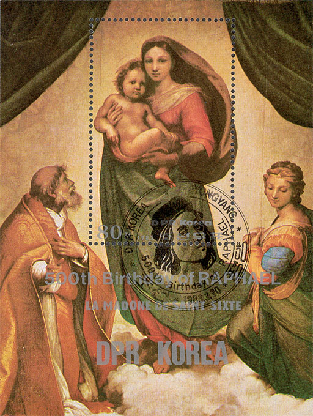
The painting was probably intended to decorate the tomb of Pope Julius II, since St. Sixtus was the patron saint of the Della Rovere family and St. Barbara and the two winged 'genii', which are visible at the bottom of the picture space and which became an independent theme in contemporary pop culture, symbolize the funeral ceremony. The canvas was located in the convent of St Sixtus in Piacenza and was later donated by the monks to Augustus III of Saxony. Source: Wikipedia .
We show on the top - left, the original painting, as presented by the Gemäldegalerie Alte Meister of Dresden. On the right of it we placed our best guesses about how could look like the original colors of this renown painting. The next image, found under it, is the miniature sheet issued by North Korea on 20th March 1983. Also in 1983, when the mankind celebrated 500th birth of Raffaello Sanzio, the Italian PA issued the stamp shown below, on the left. The colors of the Barbuda stamp, part of a set of four identical Christmas stamps, are quite similar to those of the Korean miniature sheet shown above it.
 |
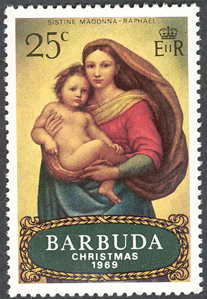 |
Below we inserted a FDC, related also to Christmas, and issued by the New Caledonia (NC) on 9th November 2006. I have chosen this issue as an illustration about how are colors distorted on some modern stamp. To be clear from the very beginning, the only thing that I like on this FDC is in black and white, and it is the FDC cancel.
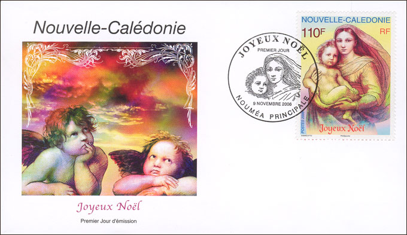
On a previous page, named Sistine on Dunes, I compared some paintings, issued in 1970 on stamps by the "infamous" Dubai, with their originals. My conclusion was that they weren't bad at all, especially considering that they were "fabricated" very quickly by some unknown designers, and were printed by some obscure printers. When we compare these stamps with the above NC issue, which was done by an known engraver and was printed quite recently, then we note that the Dubai stamps stay nearer to the original.
|
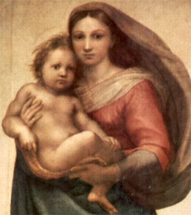 |
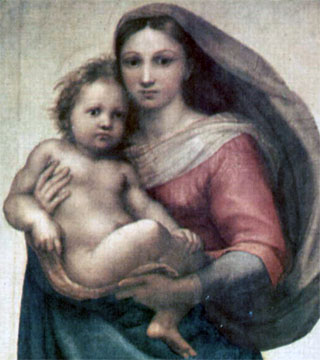 |
See above an excerpt from the painting. On the left is the original and on the right is my try to eliminate the yellowish tint (a bit too much). Below is the same excerpt from the painting, but this time on the NC stamp, that we display together with its (nice) corner.
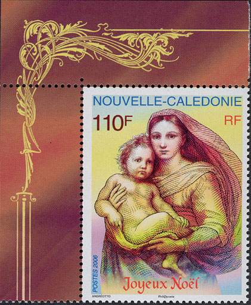
The French engraver, Mr. Claude Andréotto, well known for example for his beautiful stamp Juvarouen 76, seems to have been abused here by his own, computer assisted (?) design skills. The result is perhaps original but far removed from the original beauty of Raphael's masterwork.
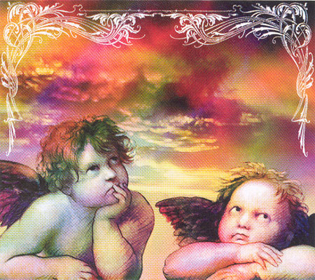
As for the winged genii on the FDC's cachet, they originate rather in the Alien movie than in the painting of the divine master from Urbino.
|
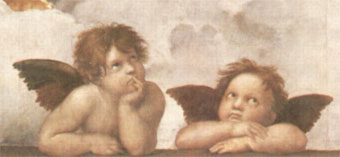 |
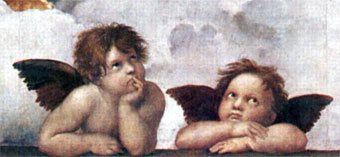 |
Links to Raphael pages found on this site:
- Sistine on... Dunes
- Raphael Madonna 1
- Raphael Madonna 2
| Published:
03/17/2009. Revised:
03/20/09. Copyright © 2009 by Victor Manta, Switzerland. All rights reserved worldwide. |
|